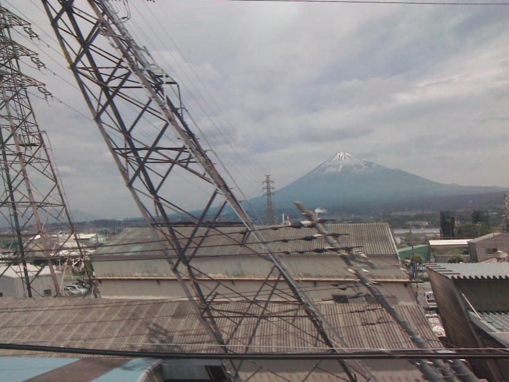
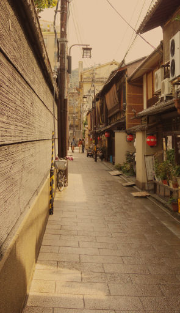

| 新歌物語 | |
| 田中 久三 | |
| (2016) | |
新歌物語
田中久三
目次
西京極清正 。そんなマンガみたいな名前の男が俺のクライアントだ。
京都日帰り出張鑑定、と言えばずいぶん大層な仕事のように聞こえるが、ふだんの俺はただの古本屋の店主、兼、大学の非常勤講師だ。商売がら古書の買い付けや鑑定は日常茶飯事。旧家から本が出たと聞けばせっせと日本国中出張する。
これは俺の元指導教官の牧之内教授に来た依頼だ。牧之内先生が俺に話を回してきたのは、要するに、今回の案件にうまみがないってことが最初からわかっていたからだろう。俺は引き受ける前に、西京極氏に依頼内容を確認するために電話した。
「出張費だけで五万円になりますが？」
「出張費の内訳は？」
「......東京と京都の往復運賃、新幹線の特急料金、飲食費、用品費、その他諸経費です。」
「では五万円でお願いします。」
「いや、出張費の他に鑑定料とか謝礼などをいただくのですが？」俺は苛立ちを抑えながら答える。
電話の向こうで西京極は声を張り上げた。
「じゃあ旅費のかからない近場の人に頼むので良いです。」
最初からもっとふっかければ良かった。
俺はそこで断るべきだった。でも欲をかいた。もしかするとその藤原定家の『明月記』逸文とやらがホンモノかもしれない。定家レベルだと一言一句の断片でも大発見。何か新しい知見に結びついて論文もじゃんじゃん書けるかも。俺の学者人生も安泰。どこかで、いまさらこの年で助教は嫌だが、准教授の口くらい見つかるかも知れない。そんな算段をしてしまった。
「やれやれ。お引き受けしましょう。特別に、こみこみで五万円で。その代わりと言ってはなんですが、もし何か発見があったときは、私が最初に学会に発表します。他言は無用ですよ。」
「ええ結構です。それではよろしくお願いします、榎本先生。」

東海道新幹線。何度も往復していると富士山通過イベントも飽きてくる。スマホのカメラで、走ってる新幹線から電柱を撮ると斜めに写るのが珍しくて一時期良く撮ってた。今はもうそれも飽きた。もう何もすることがない、ただスマホいじってるだけ。本は読まないのかって？古書店主の俺が？普段死ぬほど読んでるからね......。
最寄り駅は阪急松尾大社駅なんだが、ちょっと外れたところにあるのと、朝一に待ち合わせなので、京都駅から住所を告げてタクシーに乗る。西京極邸などというからどんな立派なお屋敷かと思えば、ごちゃっとした普通の町並みの中にある普通の町屋で、間口は狭い。インターホンの呼び鈴を押すと、玄関から男が現れる。都心の昼飯時に、部下を連れて道いっぱいに広がって、その先頭を歩いているような、いかにも中小企業の社長さんのような男。彼が依頼主の西京極清正氏ご本人に違いない。
「西京極さんですね。はじめまして。」まず名刺交換。
「奥へどうぞ。」
「失礼します。」
二人とも無駄な言葉は交わさない。あくまでもビジネスライクに。紳士的に。もう互いの腹の探り合いは始まっているのだ。
おそらくそんな由緒のあるものじゃない、鰻の寝床のような、中古木造建築特有の、かすかにつんとくる、木材の黴 びたような匂いと下水のどぶ臭い匂いが入り交じった細長い建物を抜けると、両隣の家の壁に挟まれたこぢんまりした坪庭があり、築山に紅葉。池には錦鯉が二、三匹泳いでいる。ああ、俺も池の鯉に餌をやる身分になりたい。
どんづまりに行く手を塞ぐように古風な蔵が建っている。厚い漆喰 塗りの扉は開かれていて、鑑定の品はすでに蔵の真ん中のテーブルに据えてあった。
「ではさっそく拝見させていただきます。」
俺は儀礼的に内ポケットから白いシルクの手袋を取り出してはめる。質屋のおやじが良く使う小道具だ。
上質の和紙を墨染めの細い糸で和綴 じにした冊子が五、六冊桐箱に収められている。表紙と縁 がじんわり焼けているもののそんなに古びてはいない。シミ、虫食い、折れ、痛み等、特に無し。もちろん江戸時代のものでもこのくらい状態の良いものはある。戦前のものであるのは間違いあるまいが、せいぜい大正。世相が比較的落ち着いて子女の教育も盛んだった大正時代、書生や女学生たちは、こんなふうに綺麗に和紙に清書して装丁した本を好んで作り、愛蔵したものである。書体もなんとなく女手 っぽい。
まあ、どんなにさかのぼれても江戸末期だろうねえ。開いてみると、漢文、和文、和歌などがごちゃ混ぜに書かれている。
「いかがでしょう、梧桐 先生。」
俺は榎本梧桐という名で神田神保町の裏通りに梧桐書舗という古書店を商っている。梧桐はもちろん雅号、商売柄、はったりを効かせるための名で、非常勤講師先では戸籍の名前を使っている。
足もとを見られるわけにはいかない。俺はわざと眉間に皺を寄せてみせてから、話し始める。「漢文は確かに『明月記』のようですね。ですから『明月記』の写本ではあります。」
「そうでしょう。あの、藤原定家の。鎌倉初期の、新古今集の選者の一人。百人一首の作者が書いた日記。」
定家は俺の卒論のテーマだったんだ。人に教えてもらわなくたって良く知っている。
「この蔵から出たんですね？」
「ええ。」
「でもですね。鎌倉、室町に書かれても、平成に書かれても写本は写本です。いつの時代のものかが重要です。」
「そんなことは君に言われなくてもわかっているさ。」
「それに『明月記』は当時の公卿の習いで漢文で書かれているわけですよ。こんなふうに、和歌や和文がちゃんぽんになったものではありません。」
「公卿だって和文で日記を書くかも知れないじゃないか。紀貫之だって『土佐日記』を書いてる。」
「いや、」そういう問題じゃないんですと説明しようとしたが、疲れそうなのでやめた。
漢文は丁寧な楷書体で、和文もまた、流れるような崩し字で書かれている。
「先生。『明月記』には年代に欠落が多いというじゃありませんか。実はこれが『明月記』の完本、オリジナルなのじゃないかと、思いましてね。」
『明月記』だが、定家直系の冷泉 家に伝わるいわゆる「自筆本」は巻物で五十六巻。これとても、初学の十八歳の頃のものは欠落している。頼朝が死に、後白河が死に、後鳥羽天皇の時代が始まった定家三十歳頃から、承久の乱の後出家引退するまでのものがぽつぽつと残る。その後八十で死ぬまでの日記は確認されてない。その他にも自筆本から切り取られたとされる色紙のようなものがうじゃうじゃあり、ほんとに定家が書いたかすらあやしい。写本ならもっとある。全巻揃ったオリジナル本なんてものがそんなひょっこり出てくるはずがない。
「私の知る限り、ここに書かれている和歌は、定家の詠んだものじゃありませんね。」
「知られてない歌もそりゃあるでしょう。」
「定家は、『明月記』とは別に『拾遺愚草』という歌集を残してましてね。『拾遺愚草員外』というのは定家の死後、晩年のものまで、私歌集に漏れたものを集めたものです。それらの歌集に載っていない、定家の歌で知られていないものはほとんどないと思います。少なくとも『拾遺愚草』と重複する歌がないのはおかしいと思いませんか、西京極さん。」
「こうは言えませんかね、定家はね、まずこの日記を書いた。そして世間に公表できる歌は私歌集に載せて、公卿日記として残せるものを抜き書きした、それが今に伝わる『明月記』だと。そしてこちらのオリジナルの日記は、定家の秘本であって、公にできない和歌や逸話が載っているのだと。」
「無理があると思いますねえ。」俺は頭が痛くなってきた。
「じゃあ先生はこれが偽書だとおっしゃるので？」
「わざと偽書をこしらえようと思って書いたものではありますまい。『明月記』の写本は、「定家様 」と言う定家独特の、なんと言いますかね、ぽってりとした書体を真似て、定家直筆であるかのように偽装して書かれたものが多いんです。紙質もわざと古ぼけさせてね。でもこの本の書体はほっそりと、かっちりとしてる。几帳面な方が丁寧に筆写した感じです。おそらく西京極さんのご先祖で、定家がお好きな方がいらして、『明月記』を写して、そこに自分で詠んだ歌や、日記のようなものを併記した、いわば学習帳のようなものではありますまいか。」
「価値はありますか。」
俺はぐっと言葉に詰まった。足もとを見られてはならない。
「京都の旧家の蔵から出たものですからね。江戸時代の公家が書いたものである可能性はあります。たまたまこれが、当時そこそこ名の知られた学者とか、文人とか、そんなふうな人が書いた日記であれば、学術的な価値がある場合が、ないとはいえませんが、これが定家の日記の「完本」もしくは「逸文」である可能性は、ほとんどないと思いますね。絶対ないとは言いませんよ。もっと詳しい鑑定をお望みでしたら、しばらくお借りして調べてみますが。」
西京極清正はまだ半信半疑のようだ。
「よろしいですよ、先生。お貸ししますので、良く調べていただいて、新しい発見があったら教えてください。」
「ええ。牧之内先生にも見ていただいた上で、じっくり他の古写本と校合させていただきます。」
俺は万が一、本がしけったりしないように、二重にジップロックに入れ、鞄にしまう。
「他には何かめぼしいものはありましたか。」
俺はそのとき、西京極の目がかすかに泳いだように思えた。
「いえ、特には。二束三文の掛け軸とか茶碗が出たくらいです。」
「ついでに拝見しましょうか。追加のお代はけっこうですから。」
「そうですか。ようございます。」
そうして見せてもらった品々は、明治か大正の民芸品や粗悪な洋装本ばかり。確かにこれじゃ二束三文だ。京阪の版元から出た読本 でもないかと期待してたのに。今度は俺が落胆する番だった。今預かったこの古文書らしきものも、おそらくは同時代のもの。ここにはそんなに古いものはない。
古い由緒のある茶碗というのも、天目茶碗や楽茶碗の模造品で、つまり、別に怪しげなものではないが、せいぜい明治や大正に作られた、稽古用の茶碗に過ぎない。
無駄足だった。わざわざここまで来る必要すらなかった。写本を郵送してもらうか、表紙と中身を数ページ写真に撮って送ってもらうだけでよかったのだ。
どうやらこの家には客の私以外、西京極氏本人しかいないらしい。ひっそりと静まりかえり、茶も出そうにないのでそのまま引き上げることにする。
タクシー代をけちって、電車を乗り継いで、今度はＫ大学の牧之内研究室へ向かう。近頃は京都も地下鉄がたくさん通って便利になったもんだ。特に東西線ができて便利になった。俺が学生の頃にはまだ地下鉄は烏 丸 線しかなかったんだもの。もう二十年も前のことだ。あの頃は自転車ばかり乗っていた。自転車さえあればたいていどこにでも行けた。一年もすると京都市内観光にも飽きてしまい、早くこの狭くるしい盆地から逃げ出したいと思うようになった。あのときもう少し辛抱強くこの土地に残ろうと考えていたら、今頃どうなったかわからない。
ずいぶん校舎も建て替わったが、本館は外装が改まっただけで、屋内は昔のままだ。正面の時計塔の内部は迷宮のようになっていてエレベーターもない。階段を登った六階の一角に牧之内研究室はある。新しい研究棟に移らなかったのは、牧之内教授が学内で窓際族扱いされているからというよりは、彼が自らこのような不便な、隠れ家のような場所を所望したためだろうと思われる。
鉄とコンクリート。鉄扉はいつものように開け放たれていて、学生部屋を通り抜けると小さな間仕切りがあってそこが助手部屋。その奥が牧之内先生の居室である。両側の壁は本棚で埋め尽くされ、壁に向いて置かれた机は穿 たれたくぼみのようになっている。内線は未だに黒電話。細長い部屋のどん詰まりには鋳鉄製のラジエーターが取り付けてあり、その上の窓から、寒々しい、東独の街角に彷 徨 いこんだような中庭がのぞいている。
これが日本の最高学府の教授の部屋なのだ、俺もここの住人になりたいと思ったこともあった。しかし、ケツの座りの悪い俺がこんな息苦しいところに何年もいられるはずもないってことも、明白なのだった。
東京駅で買っておいた、佃煮の折り詰めを差し出す。佃島で創業した老舗の江戸前佃煮。これは先生のご自宅用。それから定番の鳩サブレ。こちらは研究室用。仕事を紹介してもらい、鑑定も手伝ってもらうんだからこの程度の手土産は必須だ。俺はここの卒業生だし、教授も特に礼も言わずに受け取る。
そして例の西京極家の古文書を差し出す。
「西京極さんとはどういったお知り合いで？」
赤の他人がいきなり大学教授に鑑定を頼むはずもない、町の骨董屋じゃあるまいし。
「京都の西京極さんなら古い付き合いでお葬式にも参列した。そのとき東京の西京極さんとは初めてお会いして、名刺交換した。それ以来忘れていたが、急に連絡を寄越してきた。」
「それが依頼人の清正さんですね。」
「ああ。」
俺はふと気になって尋ねた。「清正さんが喪主でしたか。」清正が西京極家の当主であれば、当然彼が喪主でなくてはならない。「ほかに親族の方は？」
「いやそれが何か、内縁の妻がいたらしくてちょっと揉めてたね。」
「西京極さんが元公家だってことは、東京の西京極さんの家系は江戸時代に京都から分かれたんでしょうか。」
ごく一部の公家は京都に残留したが、ほとんどは明治天皇の後を追って東京に移り住んだのである。
「さて。清正さんは、ずいぶん遠縁らしいが、手回し良く葬儀屋や寺を手配して葬式を仕切っていたが、籍は入れてないが奥さんとその娘がいてね。私はその奥さんとは初対面だったけど、何やらいわくありげな女性だったよ。」
「へえ。」俺はちょっといやな予感がした。「で、牧之内先生、これ、どう思います？」
牧之内はさっきから例の写本をぱらぱらめくっている。
「なんだろうねえ。「嘉永」とか「文久」とか、江戸末期の年号がちらほら見えるね。ひょっとすると幕末の公家の風俗資料くらいにはなるかもしれんが、だがこんなものを論文にしても、どうせ誰も読まないよ。」
「そうでしょうねえ。」
「おや、面白いことが書いてあるよ。「嵯峨野山中有贈太皇太后源賢子之菩提寺。秘仏在其墓所。施主白河院。」歌までついてる。「浅からぬ嵯峨野の山のおくつきのかくしぼとけの影をだに見む」だとさ。」
「贈太皇太后源 賢 子 といえば、たしか、」
「白河天皇の女御、堀河天皇の生母、だな。」
「嵯峨野の山中に墓所？秘仏 ？白河天皇が中宮・源賢子のために建てた菩提寺？」
「そんな話は聞いたことがないなあ。」
「もしあったら？」
「そりゃ君。ただごとじゃないよ。平安秘仏だよ平安秘仏。しかも白河天皇ゆかりの。まず間違いなく国宝。
たとえば仁和寺の薬師如来坐像。あれ、白檀の、ほんの十センチ程度の木像だが、平成になって、白河天皇の皇子・覚行法親王の発 願 で作られたものだとわかって、国宝指定されたよ。
まあしかし、明治・大正の頃までに、秘仏という秘仏はほとんど、フェノロサや岡倉天心らが暴 いてしまったからね。京都近郊だろ？嵯峨野だろ？そんなものが今更出てくるはずがない。」
「でももし出て来たら？」
「もし君がその秘仏とやらを発見したら、君は学会から岡倉天心並の扱いを受けることになるだろうね。」
牧之内はせせら笑いながら、そう言った。
未発見の平安秘仏か。どうせガセだろうが、牧之内研究室を訪問して、少しだけ出張が楽しくなってきた。
嵯峨野と言えば天龍寺だ。俺は牧之内研究室の同期で、今は天龍寺に住み込みで修業している知り合いの沖田という男を思い出した。沖田とはすぐに連絡がとれた。洛東のＫ大学から洛西の嵐山へとんぼ返り。これから沖田に会っても、まだ今夜の新幹線には間に合う。
渡月橋を渡った先の蕎麦屋で沖田を待つ間俺は天ぬきを頼んで、それをつまみにさっさと酒盛りを始める。沖田はじきに来た。
「なんだ自分だけ先に飲み始めやがって。俺もおちょこを貰おうか。」
沖田は驚いたことに女連れだった。
「紹介するよ。俺たちの知り合いに僧侶の卵の、朝倉っていうやつがいたろ。」
「ああ、そういえば。」
「こちらは彼の奥さんだよ。」
「百合子です。」
卒業後、朝倉が、大学の後輩と結婚したって話は聞いたことがある。たしか結婚式はあげなかったはずだ。冠婚葬祭嫌いな俺は、どうせ呼ばれても出なかっただろうが。
「へえ。朝倉百合子さん？これまでお会いしたことはありませんでしたよね？」
彼女はちょっといたずらっぽい表情をした。「ありますよ、学生時代に、お話したこともあります。覚えてらっしゃらないでしょうけど。」
「そうですか。旧姓は？」
「山鹿です。山鹿百合子。」
山鹿百合子。だめだ。全然記憶にない。
「こりゃ失礼しました。いつどこでお会いしましたっけ。」
「いいんですのよ。」百合子はくすくす含み笑いした。
「朝倉はどうしました。」
「それが、今はスリランカにいるらしいんです。」
「あれ、チベットじゃなかったっけ？」
「あちこち修業して回ってて。」
百合子の顔が曇ったので、俺はちょっと同情した。朝倉の、よく言えば高踏的とでもいおうか、人を小馬鹿にしたような性格をよく知っていたから。
「困った旦那さんだね、奥さんをほったらかして。」
「仕方がないんです。わかった上で入籍したのだから。」
どうわかったというのだろう。
「彼女はヤショダラ姫さ。ブッダの妻の。」
沖田はそんないじわるな言い方をした。修行僧が妻子を残して家を出る。待つ身の女でいろってわけだ。世間にはそういう男女関係もあるんだろうな、ってくらいにしか、そのときは考えなかった。
沖田は、俺の頼んだお銚子からおちょこに手酌しはじめる。あっという間にからになり、もう一本追加。ついでにお新香盛り合わせも。百合子はただ、出されたお茶に口をつけるだけで、ぼーっとしている。この女はいったい何をしについてきたのだ？
「嵯峨野に源賢子の墓所だって？しかも秘仏？そんなものがあるわけないだろ。」沖田はにべもなく言う。「それに嵯峨野と言っても広い。嵯峨野の山というと小倉山か、愛 宕 山 かもしれないし、その奥のもっと深い山かもしれん。」
京都の愛宕山は標高九百メートル以上あって、山頂には愛宕神社の総本社がある。俺も学生時代、わざわざ「火 迺 要 慎 」と書かれた火除けのお札をもらいにいったのだが、けっこう気合いを入れねば登れぬ山だ。
「嵯峨野ってだけじゃあどこにあるか何とも言えんし、あったかもしれないが今はもう残ってないかもしれない。ここの天龍寺だって、もとはと言えば後嵯峨天皇の離宮だったが、足利尊氏が後醍醐天皇を鎮魂するために建立したんだ。後嵯峨天皇の時代から何度も焼失している。もっと昔、白河天皇は確かに嵐山に行幸したことがある。」
「大井川ふるき流れをたづねきて嵐の山のもみぢをぞ見る。」
「そう、それそれ。その時代の寺がそのまま残っているはずがない。だいたいその西京極というのは何者だ。公家の末裔なのか。」
「ああ。室町時代に冷泉家から分かれた、などと聞いた。だから定家ゆかりの古文書が出るのだと。」
「戦前は華族だった？」
「ああ。子爵だったそうだ。」
「華族はみんな京都から東京に引っ越したはずだろう。なぜ松尾大社あたりに地所が残っている？」
「俺がさっき会ったクライアントは西京極家の当主でキヨマサっていう人なんだけどさ。牧之内先生によれば、西京極家は、東京に移った本家と、京都に残った分家があったらしいよ。でもその分家がとうとう絶えたので、本家が遺産を整理することになった。清正さんがその京都の分家の蔵を整理してて、」
「それで古文書が出て来たと。」
「そう。それで俺が呼ばれた。だけどその西京極清正に鑑定料を値切られた。」
「ふうん。」
「けちなやつなんだ。東京京都の往復旅費だけで鑑定しろ、なんてさ。」
「そんな案件を受けるおまえが悪い。」
沖田がトイレに立ったすきに、百合子が俺に話しかけてきた。
「あの、榎本さんは、仏教美術の研究者なのですか。」
「ああ。そう言われればそうだけど。」
骨董好きが昂じて文学や美学なぞ専攻して、就職もままならないし、そもそもサラリーマンにははなからなる気はなくて売れない古本屋を始めた。大学時代の知り合いに仏教関係者が多かったから、そっちの世界のことも多少は知っている。
「それで、西京極家の資産について調査してらっしゃるんですか。」
「まあね、最初は本の鑑定だけだったんだが。」
「すみません。いきなり、たいへん失礼かとは思うのですが、今晩もしお時間があったら、相談に乗っていただきたいことがあるんですけど。」
いや、俺は今晩新幹線で東京に帰るんだ、と言おうとしたんだが、彼女の訴えるような瞳と目が合ってしまい、俺はぐっとこらえた。出張が長引く可能性もあったので、切符はまだ買っていなかったし、明日の予定も開けてある。
「それはあなたが俺に仕事の依頼がしたいってことでいいのか。」
「そうお考えになられてけっこうです。」
「当然報酬は要求するぜ。とりあえずは、今夜の俺の宿泊費。当然の必要経費だが。」
「もちろんかまいません。」
「もしかしてあなたは、西京極家の関係者？」
「ええ。私の亡くなった父が、西京極です。」
「つまり京都の分家の？」
「東京の西京極が分家ですのよ。」
どっちが本家でどっちが分家かなんて知ったことじゃない。
「京都の分家が絶えたので、東京から資産を整理しに来たって聞いたが。」
「私、西京極の妾の子なんです。母は、籍は入れてなかったんです。」
「ははん。そういうことか。」
ずいぶんと奇遇だ。東京の西京極と、京都の西京極。その二 方 のクライアントから、どうやら俺は依頼を受けることになるらしい。話が込み入ってきた。察するに、この朝倉百合子という女は、俺が西京極から依頼を受けているってことを沖田に聞いて知った。だからわざわざ沖田にくっついて、俺に会いにきたのだ。
「百合子さん、あなたはどうして今日沖田といっしょにいたんですか。」
「それはその、夫の仕事の関係で、今日はたまたま天龍寺に用事がありまして、お昼休みだけちょっと抜けてきたのです。」
「へえ。」
沖田がトイレから戻ってきた。百合子は胸にさした万年筆で電話番号を箸袋に殴り書きして俺に手渡した。彼女の目が、沖田には内緒にしてくれと言っている。俺はその箸袋をさりげなく尻のポケットにしまった。
どうやらこの女は秘仏について何かを知っているらしい。
話を聞いてみる価値はあるなと俺は思った。
昼時を過ぎてから、観光客で混み合ってきた。外にはいつの間にか行列ができている。別に俺たちが慌てる必要はないのだが、俺は早く出たくてそわそわしてきた。
「沖田、おまえ、酒なんか飲んじまって、午後の仕事はどうするつもりだ。」
「何、このくらいなんてことない。」
「お寺は不許葷酒入山門だろ？」
「あれは般若湯さ。」
良い気分に酔っ払った沖田は百合子といっしょに渡月橋を渡って帰っていった。
しばらく間をおいて俺は百合子に電話する。
「祇園の縁切り神社ってご存知ですか。」
「ええっと。なんだかネットで見た覚えがあるが。近頃有名なパワースポットだろ、たしか。」
百合子はくすくす笑った。
「安井金毘羅宮。祭神は崇徳院と源頼政。その近くに私の母がやってるお店があります。」
「飲み屋か？」
「ええ。「久美子」という名の小料理屋です。」
「住所さえ教えてくれりゃグーグルマップ見てたどり着けるよ。」
百合子はその住所を俺に告げた。
「では、お待ちしています。」
「久美子というのは君の母親の名か。」
「そうです。」
今度は祇園か。やれやれ。京都市街を西東。忙しい日だな。
俺はまず、慌てず騒がず、東山辺りのビジネスホテルを予約して、チェックインした。
俺は一応、西京極清正に一言報告をしておくことにした。こういうことは早めにやっとくに限る。「西京極さん？」
「はい。」
「榎本ですが、あれからＫ大の牧之内先生のところへ寄りました。それで少々気になる記述があったんですが、西京極家に伝わる、平安時代の秘仏というものがあると、聞いたことがありますか？」
「ええ、あります。」即答したふりをして、妙な間があった。「祖父や父が言っておりましたから。実はそれが蔵から出てくるんじゃないかと、私も期待していたんですがね。」
「なかったと。で、何か手がかりになりそうなものは出ましたか。」
「もうご承知のようですから話しますと、仏像の模写がありました。表装して、掛け軸に仕立ててありまして、由来が書き添えてある。図像は立て膝で、上 り框 か何かに腰掛けたようなくだけた姿勢。手には一輪の花を持っている。私には観音像のように見えました。
それから古地図、これがどうも秘仏と関係あるらしいんですが、よくわからん地図なのです。たぶん、わざとわかりにくいように描いてある。東西南北もはっきりしないし、地形も歪 んでいるようだ。榎本先生にもお見せしたほうがよろしいですか。」
「いずれ必要があれば見せてください。私のほうで調べたいことがあります。」
「そうですか。では何かわかりましたら、随時知らせてください。」
「ほかに手がかりらしきものは。」
「そうですなあ。江戸時代の大福帳やら、明治から平成まで、法事や茶会関係の目録や名簿、領収書らしきものがどっさりでましたがね。」
うげっ。これだから旧家は困る。気が遠くなる話だが、それらも調べれば何か出てくる可能性がある。
「ふむ。なるほど。いずれまたお伺いするかもしれませんが、くれぐれも内密にしてくださいよ。」
「それはこちらの言うセリフですな。」
「追加の調査料を請求してもよろしいですか？」
しばらく沈黙があった。
「そちらの件はそちらでもう弁護士に頼んであるのですが。まあよろしい。請求書を出していただいて、それを見てから決めてよろしいか。」
またずいぶんと渋ちんだ。だいたいこういうやつは請求書送ったとたん黙り込むんだよ。
「ええ。極力こまめに報告しますから、そのつど請求書を送ります。」
ひとっぷろ浴びたい気分だったので、シャワーだけ浴び、朝が早かったせいでやたらと眠いのでベッドで一、二時間ばかり仮眠した。それから安井金毘羅宮とやらまで祇園の花街をぶらぶら歩いて来てみると、そこはやたらと女性の参拝客で賑わっている神社だった。「悪縁を切り良縁を結ぶ祈願所」らしい。全国から芸妓やキャバ嬢らがわんさと集まる祇園だからこそ需要があるのだろう。

お茶屋の赤い提灯が並んだ石畳の小道をひやかしながら「久美子」を探してうろつきまわるうちに次第に日は暮れてくる。狭い露地のそのまた奥にある、五坪ほどの家にその看板は小さく出ていた。格子戸の上に丸くかわいらしい黄色い磨りガラスの外灯がともっていて、一見お茶屋風だが、ただの人 ん家 にも見える。やはりここらしい。あたりには同じような家がごちゃごちゃ建てこんでる。軒並み再建築不可物件ばかりだ。魔界だな。昔はこんな町並みが好きだったこともあるが、自分で家探しして、不動産のことを少し勉強してみると、とてもじゃないが住みたいって気にはなれない。
戸はしまっているが鍵はかかってない。「榎本です」と名乗ると「いらっしゃい」と中から女の声がするので入る。
シックな絞り染めの浴衣を着こなした中年の女将がタオルで手を拭 いながら出迎えた。いかにも祇園のママらしい濃い派手な顔つきをしている。五十は過ぎてるだろう。若い頃は美人だったに違いない。今は二重あごで年相応と言ったところか。きっとわけありな人生を送ってきたのだ。
「はじめまして。山鹿久美子と申します。」
そう名乗られる前から彼女が百合子の母・久美子だってことはわかりすぎるくらいわかっていたよ。
「梧桐先生、さあ、奥の座敷へどうぞ。」
奥と言っても三畳ばかりの畳席があるばかり。その暗がりにいてスマホをいじっている女は百合子らしい。
「いいです。かえって話しにくい。カウンターでいいです。」
「何をお飲みになります。」百合子が出て来て俺に聞く。彼女はさっきと同じでほとんどすっぴんだ。
商談のはずだが、酒を出すというのなら飲んでやろう。
「じゃ、瓶ビールで。」
久美子はすかさずコップと小鉢をカウンター越しに俺に手渡し、手ずから俺に瓶ビールを注ぐ。瓶の口まで泡がのぼってきてドームのように丸く膨らみ、ぱちんとはじけた。それから百合子がおしぼりをもってくる。
「西京極家は、冷泉家の子孫だそうですね。」ビールで喉をしめらせ、俺は久美子に話しかける。
「違います。定家の血筋ではありません。藤原師実 の子孫です。」
「師実？なんだ。摂家じゃないか。」
師実は道長の孫。頼通の子。素性の知れぬ母に産まれたが、兄たちが死んだり、養子に出されたり、坊主になったりしたので運良く藤氏長者になれた。後三条天皇の治世に活躍し、白河天皇の代に従一位、摂政、関白、太政大臣。位人臣を極めるとは彼のような人を言うのだった。
「ええ。師実に師康 という子がいました。師康が西京極家の始祖です。」
もろやす？はて、藤原師康？知らんな、誰だそれ。
中臣鎌足の子孫、藤原氏の家系を完全に把握している人などいるはずもない。どんな専門家でも、どんな大学者でも。俺も一度徹底的に調べようとして匙を投げた。歴史に名が残っているだけで何万人にもなる。
この、山鹿久美子という女が言うことがほんとうならば、西京極家はものすごく古い、由緒のある家系ということになる。鎌倉時代に定家の家系から冷泉家がわかれるよりもさらに二百年も前のことだ。ほんとならばだが。
「単刀直入に聞こうじゃないか。山鹿さん。あなたは秘仏のありかを知っているのですか。」
「はい。」きっぱり言い切った。
「ほほう？」俺は驚きと焦りを表情に出さないよう用心する。「その秘仏は誰にも知られてない？」
「はい。」
「なぜ？」
「西京極家が代々、他家には秘密にしてきたからです。始祖の師康以来。」
「千年近くも隠し通せたというのか。」
「ええ。」
千年という歳月がどんなにすごいことかこの人には理解できているのだろうか？
「それは西京極家の持ち物なのですか？」
「いいえ。今は私個人の所有物です。」
「つまり？」
「私が夫の西京極からもらい受けたのです。私は内縁の妻でしたから、遺産相続権がありません。」ははあ。これでつながった。この久美子という女が、清正と喪主を争った内縁の妻か。だから百合子の旧姓は山鹿なのだ。「ですので、生前に、夫から私が贈与を受けました。夫が死んでしまえば、遺産は全部東京の西京極家が相続してしまう。だから、夫は急いだのです。土地の権利書もあります。名義は夫から私に書き換えてあります。」
「土地の権利書？つまり、秘仏はお寺か何かに安置してあるのですか？権利書はその寺のもの？」
「寺ではありません。昔は何か建ってたかしれませんが、今は何もありません。嵯峨野の奥のただの雑木林ですが、山をくりぬいて、石造りの室 があります。」
「そこが源賢子の墓所だというのか。」
「はい。」
俺の奥歯ががちがち鳴り始めた。もしその話が真実ならばどえらいことだ。
「秘仏とは？」
「墓所内の厨子に納められている、木造に金箔を貼った観音座像です。白河天皇が賢子を模して作らせたものだと言われています。仏像のよしあしは私にはわかりませんが、とても優美な、美しい像だと思います。大きさは等身大ほどですが、保存状態は非常によくて、金箔や塗装も良く残り、どこも欠けたところはありません。」
清正が言っていた模写の特徴に一致する。俺は腰ポケットから絹のハンカチを取り出して額をぬぐった。これは本来、掛け軸を鑑定するときなどに口にくわえてクライアントにそれっぽく見せるアイテムなのだが。
「山鹿久美子さん。ずいぶんと面白い話をこしらえましたね。あなたは俺をだまそうとしているね。」
「なぜです。」
「そんなうまい話があるはずがない。贋 作 を高く売りつけようったって、俺は騙 されないよ。」
「そんな。」久美子は淡々と言い返す。「買っていただこうとか値をつり上げようなんて考えてもいません。」
「あなたの言うことがほんとうなら、いますぐ文化庁に連絡しなきゃならない。それは国宝だ。一般人が所有して良いものではない。まして俺が売買してよいものでもない。」
「ちょっと待ってください、先生。私の話を聞いて。」
俺は彼女を凝視した。彼女の表情を穴があくほどに観察した。彼女が何かを言いたいってことはわかる。でも売り買いの話ではないという。では何を相談したいのだ。なぜ見ず知らずの俺に？
「あなたは清正さんの依頼を受けたのでしょう。あの家はもともと私の夫のものなのです。あの蔵の中にあったものも。私たちが夫のお通夜でお寺さんに泊まっていたすきに、西京極が錠前屋と弁護士を連れて来て、鍵を付け替えて、家を差し押さえてしまいました。私たちはもうあの家のものに一切手を触れることができません。私も娘もあの家を立ち退かされました。」
「ずいぶん乱暴だな。しかるべきところに訴え出れば、元の家に住み続けられるかもしれないぜ。」
「清正さんに、代わりの家をあてがわれました。「ここに住め。これは手切れ金代わりにくれてやるから」って。」
「マンション？」
「いえ、戸建て。築十五年の中古ですが、粟田口に。」
「そりゃ豪儀だな。」
「ええ。とても静かで、緑が豊かな住宅街で、ここのお店にも近くて便利だし、私たち女二人で暮らすには充分な広さでしたのでつい。それにむこうは弁護士もついてて、何事も内容証明で送られてきて、私たちはもうその封を切って手紙を読むだけでどぎまぎしてしまって。あれから半年経って、だいぶ落ち着いてきましたし、もういいんです。」
「ふうん。そりゃそうと、なぜ正式に結婚しなかったんです。」
「夫のせいじゃありません。東京の分家が反対したからです。」
「結婚は当人の自由だろ。」
「夫は、そのう。資産を使い果たして、連帯保証人になってもらってましたからねえ。」
やれやれ。まったく面倒くさい話だな。
「俺の記憶が確かなら、たしか判例で内縁の妻でも十五年以上同居してれば本妻扱いになる。娘の百合子さんが生まれたのはもう二十年以上前だろ。」
「そうです。ずっと同居してました。」
ほんとに同居してたのだろうか？久美子は祇園のママで、ただの愛人だっただけじゃないのか？聞いても正直にほんとのことは言うまいが。
「ならもっと強気に出ても勝てるんじゃないかと思うよ。」
「そうでしょうか。知り合いの弁護士さんに、事実婚や内縁関係は認められても、配偶者じゃないと法定相続人にはならないと言われました。」
「あ、そう。じゃその弁護士さんに良く相談してみては。」
「それで、こんな日がいつかはこようかと、大切なものは貸金庫に保管しておいたのです。」
「源賢子の墓所の土地の権利書、などということか。」
「そうです。」
俺はとっくにうんざりしていた。古文書の鑑定というならともかく、本家と分家の遺産相続争いなんてのは専門外だ。
「俺にどうしろというんだ。俺は西京極から正式な依頼を受けていて契約書も交わしている。俺がこのことを西京極に報告したら、あなたたちは困ったことにならないか。墓所や観音像が西京極家伝来のもの、西京極家の家宝であるとすれば、あなたはあなたの夫から正式に譲渡されたものだと主張するかもしれないが、事実上の妻であろうと赤の他人のあなたがだよ、西京極家固有の資産を継承できるだろうか。他家に譲渡してはならないなどという念書やら、先代や先々代の遺言などが出てくる可能性もある。土地の名義を親族に無断で他人に変更したなどということも必ず問題にされる。法務局で登記簿を調べればすぐにばれることだ。あなたたちはきっとこれからもめ事に巻き込まれるし、あなたたちを擁護すると俺にもとばっちりがくるかもしれない。
それにもし単に俺に仏像を鑑定してほしいのならば、他にもっと適任な者がいるだろう。そもそも俺の専門は黄表紙や読本などの江戸文芸であって、骨董や仏像は趣味に毛が生えたみたいなもんだからな。俺はこの件に関してあなたがたに関わりたくない。」
「実は、」百合子が口をはさむ。「このことは言おうか言うまいか迷っていたのですが。その、夫に口止めされていたので。」
「何だよ。まどろっこしいな。」
「夫が、あなたを頼れと。」
「チベット僧になろうとした、あの、朝倉がか。」
「ええ。「申し訳ないが俺はインドに行く。きっと君は義父 が死んだときに困ったことになるだろう。そんなときにいてやれないのが気がかりだ。そうなったら榎本という男を頼れ」と。」
沖田と朝倉と俺は、牧之内研究室の同期だった。親しいと言えば親しいが、それ以上の仲ではない。そもそもなぜ沖田ではなく俺なのか？
「あなたが俺に話をもちかけたのは、俺のことを沖田から聞いたからではないの？」
「違います。今日はたまたま。いずれあなたに直接ご相談しようと思ってました。沖田さんか、牧之内先生のご紹介という形で。」
「俺を頼ってどうする。朝倉とは連絡は取れないのか。」
「取れません。もう、何度も取ろうとしているのですが。もう死んでいるかも。」
「百合子さん。よりによって妻のあなたがそんな不吉なことをいうのか。」
「夫は常々言ってました。俺はもう死んだものと思ってくれと。」
「朝倉と沖田は親しかったはずだ。沖田に頼めよ。」
「それはちょっと。」百合子は頬を赤らめた。「沖田さんは、夫の恋敵だったから。」
へえ。つまり俺だけが蚊帳の外だったってことか。
薄気味悪い話だ。朝倉にどんな魂胆があって俺を巻き込む。しかし朝倉の意志は確認できない。
俺は深呼吸した。
「解決策はいくつかある。土地の譲渡だが、嵐山の山奥の、資産価値のほとんどない山林を譲り受けたというだけならば、西京極さんも、気付いたとしてもとやかくつっついてくることはあるまい。今までどおり、誰にも秘密にして、百合子さん、あなたが子孫に伝えれば良い。悪くない手だが、俺には何のメリットもない。俺としては秘仏を発見してはなばなしく学会に認められたいわけだよ。」
俺はしがない古書店主。毎月テナント料の支払いでひいひい言ってる。店舗小売りだけでなく、アマゾンでネット販売もしてる。客が来ないときはずっとパソコンとにらめっこだ。仕入れた品を一つ一つ登録する。しかしちっとも儲からない。ネットだけで商売すればテナント代は浮くわけだが、そんなひとりぼっちの仙人みたいな仕事はしたくないわな。大学の非常勤講師の給料なんてスズメの涙だ。何か研究で一発当ててアカポスでもゲットしないことにゃ嫁さんももらえない。
「それで、もし俺に任せてくれるっていうなら、俺がうまい具合に文化庁の役人に根回ししてやろう。東京の西京極さんは、無責任にも明治維新以後、京都を去って、墓所の管理をまったく行わなかった。一方、京都に残った西京極さんは、百年以上の長きにわたり、墓所を管理してきた。そして内縁の妻とはいえ、山鹿さん、あなたは夫と二人で、今日まで何十年も社稷を絶やさず、その墓所を守ってきたんだろう？」
「その通りですわ。」久美子が言う。「夫が寝たきりになった後は、ずっと私一人で。夫の介護もして、百合子にも手伝ってもらって、こうして祇園の小料理屋の女将として働きながら。」
「うん。良い感じだね。グッドな筋書だ。それでいこう。そういうわけで山鹿さん、あなたは墓所を管理してきたという実績があって、西京極さんには無い。文化庁の文化審議会ってところは、とりわけ、文化財を管理する能力と実績があるかってことを重視するんだよ。だから国は国宝指定した上で、あなたの所有権を認め、あなたが墓所と秘仏を管理する権利も認めてくれるだろう。そうすりゃしめたもんだ。観光客がどんどん押し寄せるよ。こんなお宝滅多にないよ。まさに門前市をなすよ。その拝観料であなたたちは楽に暮らしていけるだろう。
その代わりと言っちゃなんだが、ことがうまく運ぶまでは、俺以外の人間には絶対にこのことを話しちゃだめだ。俺が自分の論文で一番最初に公表する。それでいいかい？」
「よろしゅうございますわ、榎本さん。」
「念のために、もう一度言わせてもらうが、俺はあなたたちのもめ事には一切関わり合いたくないし何の興味もないが、秘仏だけは別だ。俺が誰より先に公表して論文も書きたいんだ。そこんところを守ってくれなきゃこの話はチャラだからね？」
「了解しました。」
「そうと決まったら、明日早速嵐山に行ってみよう。そもそも秘仏が贋作だったら、何の意味もないんだからな。」
「私がご案内しますわ。」そう言ったのは朝倉百合子だった。「ずいぶん歩きますから覚悟しておいてくださいね。」
「俺はこう見えて健脚でね。じゃあおやすみなさい。」
俺はビール一本で帰るつもりだった。すかさず立ち上がり帰ろうとすると、久美子が引き留める。
「あら、そんなに急いで帰ることはないじゃありませんか。せっかく私たちの店までお越しいただいたのに。私たちもあなたがお帰りになったあと、これから店をあけるつもりはありませんし。お気に召せば、なんなら朝まで飲んでらしても。」そういって、久美子がなんだかあやしげな秋波を送ってくる、ように見える。
「いえ、けっこう。あんまり飲んで夜更かししちゃ明日の山歩きに障る。」
「そうですよ、お母さん。」
この京都祇園の小料理店で、この母娘 と三人貸し切りで、朝まで差し向かいで酒を飲むってのは一興だ。こういう遊び、俺も嫌いじゃない。
しかし俺は、初めて会った女とは懇意にならないようにしている。飲み屋には何度か通ってみて、向こうも俺の顔を覚えてくれて、つまり常連の末席に連なってみなくては。友達づきあいするにしろ、深い仲になるにしろ、それからのことだ。
この母娘が抱えている問題はややこしすぎる。この久美子という女の発するオーラはやばすぎる。これ以上首を突っ込んじゃいけないと俺の本能が言っている。
それに、嵯峨野の秘仏の面影だけで、今日の俺の胸の中がいっぱいいっぱいだ。今日はもう帰るべきだ。
翌日。晴天に白いちぎれ雲が浮かぶ絶好の山登り日和。
ホテルの朝食のビュッフェは多めに食べて腹ごしらえ。
早めのチェックアウト。領収証に宛名「梧桐書舗」と宛名を書いてもらう。後で百合子にまとめて請求しよう。
地下鉄東山駅で百合子と待ち合わせ。二条でＪＲ嵯峨野線に乗り換え、保津峡駅で降りる。ここがまた鉄道橋の上にプラットホームがあるとんでもない駅だ。きりたった保津渓谷のまっただ中で平地がどこにもないから仕方なくこんなところに作ったのだ。
「登りはタクシーにする？」
と百合子が聞くから、
「のんびり歩きでもいいよ、」
と俺は答える。駅前のロータリーにはタクシーの影も形もない。そりゃそうだろう。こんなところで客待ちなんかするわけがない。電話で呼ぶのも面倒くさいので歩き出す。しばらく行くと赤い鉄骨トラス橋で桂川を渡る。その先の府道は右も左も深い杉木立。
それから一時間余りもだらだら坂を登ったであろうか、清和天皇の陵を過ぎる。なるほどここが嵯峨水尾 なのだ、清和天皇の別名、水尾帝 はこの地にちなむ。二十七歳の若い盛りにいきなり譲位、この水尾の里を気に入って終 の棲家とすると宣言、断食などの苦行を行い仏道に励んだというのだが、こうして来てみりゃわかるが、明らかに作り話だ。退位してわずか五年後に崩御している。悪妻・藤原高子が、自分の夫をこんな辺鄙なところに追いやって寂しく死なせたのだ。仕事もせず女遊びに明け暮れた嫌な夫だったかもしれないが、なんてひどいことをするんだろう、と俺は同情を禁じ得ない。清和天皇の兄・惟喬 親王も比叡の山奥、小野の里に幽閉された。清和天皇の子・陽成天皇にも難癖つけて退位させて、長く無為な余生を送らせたのである。のちの崇徳院や後鳥羽院、後醍醐天皇のように、遠方に流さなかったというだけのことだ。
ここ水尾の集落は、清和上皇の世話をするために移り住んだ松尾社の子孫であるという。西京極家とも関係があるのではなかろうか？
しかしまあいかにも、平安時代の皇族や貴族たちの「奥津城 」があってもおかしくない場所だ。
どんどん府道をそれて、道無き道に入っていく。ひとけは全く無い。俺たちに出くわした人は、夫婦連れで山道を散策していると思うだろうか。それとも不倫カップルが心中場所を探していると思うだろうか。
「夫を連れて良くここに来ましたわ。女一人じゃ不用心なので。」
「どのくらい？」
「年に四回、季節ごとに必ず、蜘蛛の巣を払い、風を通しに。」
「そりゃたいへんですね。朝倉とはどういうなれそめで？」
「彼は、演劇部のＯＢだったんです。私、母が芸妓だったから、子供の頃から日舞を仕込まれて。それで。」
「ふうん。そういや、朝倉は一時期歌舞伎役者も目指してたっけ。たしかなんかの端役で舞台に出たはずだ。講演のチケットも、タダでもらったことあったけど、見にはいかなかったなあ。あれでけっこう色男だからな、あいつは。」
百合子はちょっとはにかんだようだった。
散り敷いた杉の枯れ枝をパキパキ踏みしだきながら、二人で黙々と歩いていたら、百合子が唐突に気乗りしない話題を振ってきやがった。
「榎本さんは、神保町で本屋さんやってるんですってね。」
「はあ。」
俺は三十くらいまで塾講師や非常勤講師、フリーのライターや翻訳家なんかやってぷらぷらしてた。沖田や朝倉もそうだが俺の知り合いはこんなんばっかりだ。見かねた出版業界の知り合いが神保町の店主の口を紹介してくれたのだった。
「神保町って全国一の本屋さんの町なんでしょう。私、憧れるな。」
「おやおや。あなたは文学少女でしたか。」
「そう。」
俺が今、神保町で働いているのも、昔文学少年だったからだ。気持ちはわかる。
「しかし近頃は神保町も、ずいぶん寂れたよ。」
「どうして？」
「大学が移転してどんどん無くなってるからね。学生がいなくなった。昔と比べると本屋の数こそそんなに減っちゃいないが、気のせいかもしれんが、品揃えはずいぶん薄くなった気がするよ。珍本希少本は、ネットで高く売れる時代だからなあ。戦前の古本なんて昔は山と積まれてたもんさ。『キング』って雑誌とかね。今はなかなか見ないねえ。」
戦前と言ってももう七十年も前だからな。本も減るわけだ。
「定食屋もずいぶん潰れた。昔は学生やサラリーマン向けに昼飯を食わせてくれる個人店主の店がたくさんあったんだが、今じゃ味気ないチェーンの立ち食い蕎麦屋とか、そんなのばっかりだ。」
「へえ。でも、楽しいでしょう、本屋の店番って。」
「どうしてそう思う。」
「私も学生の頃、寺町通りの古書店でバイトしてました。とても楽しい思い出だった。」
「俺も大学の受講生に声かけてバイトに使ってるよ。非常勤回りやら買い付けやらで、ずっと店にいるわけにもいかないし。第一あんなところに缶詰になってちゃ窒息しちまう。」
「かわいい女子大生とか？」
「えっ。」
「バイトに雇っている子ですよ。」
「さてね。男子より女子のほうがいいに決まってるよな。客受けもいい。よく気がつくし。卒業した家庭の主婦だったりすることもあるよ。可愛いかどうかはともかくとして。みんな本が好きでね。そりゃそうだよな、わざわざ書店の店番やりたいなんてやつは。ヒマなときはずっと本読んでる。店が終わって、お茶の水か、神田の西口辺りまで飲みに連れて行くこともある。」
「あら、榎本さんたら。女子大生や主婦を酔わせてどうするつもり。」
「どうもこうもどんなつもりもない。」どうも女というやつは変にかんぐるから困る。俺は変なほうに話がいかないように話題をそらす。「ところでまだだいぶ歩くのかね？」
「もう少し。」百合子がぼそりと呟く。「不便なところでしょう。車も入ってこれなくて。あなたご存知、浅からぬ嵯峨野の山の奥津城の隠し仏の影をだに見ん」
「知ってるとも。百合子さん。あなたどこでその歌を。」
「ええ。父から直接聞きました。榎本先生は？」
「西京極清正さんから見せてもらった古書に書いてあった。おそらくその歌はその本にしか書かれていない。誰にも知られてない歌だ。」
「そうでしたか。」
確かに浅くはない。愛宕山の中腹を、さらに一時間ばかり獣道をたどった先に、明らかにそこだけ人手が入ってない、周りと植生が違うこんもりとしたひとかたまりの森があって、その中に岩室 はあった。入り口は柴を立てかけて隠してあり、柴をどけると鉄格子に厳重に鎖がかけてあり、閂 が刺さっている。朝倉百合子は鍵で錠前を開けた。
アマゾンでポチった最新のＬＥＤヘッドライトが役に立つときがきた。とても明るく、ビームを絞ったり拡げたりできる。まるでスペシウム光線みたい。
狭いトンネルを中腰で進むとその奥に暗くひんやりする石室がある。その中央に石の柩 がある。この中にほんとに源賢子が眠っているのか？まあ、考古学はだれか他の専門家に任せよう。柩に呪いや罠でもしかけられてたら厄介だ。
奥の壁面が穿 たれて、黒檀の厨子が置かれている。
その厨子にもまた錠が刺してある。百合子が再びそれを鍵束の鍵で開ける。
ＬＥＤの光を当てちゃかわいそうだから、燭台の蝋燭に火を灯し、お焼香して拝見する。
それは明らかに女人を、妖艶 な美女を象 った観音像であった。
頭 に戴く冠から、透かし彫りの水煙が炎 のように燃え立ち、宝玉をちりばめた美麗な首飾りを巻いている。瞳は黒く、髪の毛は青く彩色されている。その目は観音というよりは、弥勒のように謎めいて、口元には紅 の色素も残り、ほのかな笑みを浮かべている。
腰は細くくびれ、指は細く長く、手首には腕輪をし、両手で来迎印 を結び、さらに右手には二重 五弁の宝相華 の一茎をやんわりと摘まんでいる。仏教美術というよりは、限りなくヒンドゥーの偶像に近い。
「おそろしい......。」
「でしょう。私もこの像に魅入られて、またこの像にお会いしたくなって、この山に戻ってきてしまうんです。」
源賢子とは、はたしてこのような女であったろうか。
俺は、寵姫賢子を喪 った白河天皇が、この観音像をこの岩室で抱き、その唇に口づけをする姿を夢想した。
俺はカメラでその像をできるだけいろんな角度から撮影した。僕はまずこの像の真贋を鑑定しなくてはならない。ここから運び出しレントゲン撮影したり、一部を削って顔料の分析や放射性炭素の年代測定をする必要もあるかもしれない。或いは、そうするまでもなく、あっけなく贋作である証拠が見つかるかも知れない。ともかく同時代の仏像と比較して精査してみなくては。
源賢子は村上源氏の源顕房の娘。摂政藤原師実の養女となった上で、白河天皇の女御となった。顕房は村上天皇の曾孫。臣籍となって久しいから、その娘を入内させるに際して摂家の養女とする必要があった、ということか。村上源氏が後に繁栄し、その後裔に久我通親や道元、北畠顕房らを輩出したのは、ひとえに、白河天皇が賢子を愛し、その実父の顕房を寵遇したからである。
賢子は数え十五で入内し、十年間に帝の子を五人も産んだ。
第一皇子、敦文 親王。早世した。
第一皇女、伊勢斎宮・郁芳門院媞子 内親王。
第三皇女、賀茂斎院・二条大宮令子 内親王。
第三皇子、善仁 親王。のちの堀河天皇。
第四皇女、土御門斎院・禛子 内親王
帝は善仁親王以外の皇子をみな法親王にしてしまった。そして善仁親王を立てて堀河天皇とした。賢子が危篤になったとき帝は彼女を宮中から里に退下させようとしなかった。天皇は死の穢れを忌むために、肉親や妻ですら、その死の間際を看取ることはできないのだ。彼女が死ぬと、帝は数日間、食事も摂らず慟哭した。賢子享年二十八歳。帝は三十一歳。その後は正式な后や女御を入れず、ただ祇園の遊女らと遊蕩に耽った。
帝は余りにも賢子を愛した。賢子を喪ってぽっかりと空いた帝の心の隙間を埋められるものは誰もいなかった。帝は賢子の菩提寺を人里離れたここに建て、賢子に似せた観音像を作らせ、賢子の養父・藤原師実の子孫に守らせた。
俺はこの像が贋作に違いないと思った。造形があまりにも完璧で話ができすぎてる。こんな像が、十一世紀、平安後期に、白河天皇の発願で作られて、誰にも知られず今日まで残ってきたはずがない。
元通り厨子に鍵をかけ、俺たちは外へ出る。そして元通り、戸口にカモフラージュの柴を立てかける。
「ずいぶん大がかりな嘘を仕掛けてきましたね、あなたは。あなた一人にできることじゃない。いったい誰のたくらみなんです？」
「そんな。ひどい。」
俺は彼女の表情を観察した。結局俺には、彼女に何の不審な点も見つけられなかった。
「たぶん調査には時間がかかると思います。何、急ぐことじゃないでしょう。辛抱強く待っていてください。」
山からおりる坂道の途中、彼女は後をついてくる俺を振り返りながら言った。
「私、やっぱり、これは誰にも知らせず、私たちの子供たちに残してあげるのが良いんじゃないかって思えてきました。だって私の祖先たちはみなそうしてきたんですから。」
「そうか。残念だね。やっと俺も日の目をみるかと思ったのに。でも、あなたの好きなようにすればいい。」
「すみません。」
「案外悪くない考えだよ、何もしないってのは。国宝や重要文化財には文化財保護法ってやっかいものがあってね。国宝を相続するとなりゃ手続きは煩雑だし、相続税などの減免措置はあるが資産価値に見合った税金は取られるし。国宝だけに管理責任ってのも重大なんだぜ。火災に盗難。地震対策。運用はできてもうまくやらなきゃ破産するかもしれない。そういう面倒くさいことを次の世代に先送りして、ゆっくり考えるというのも一つの手だ。」
「そうですよね。正直どうしたらいいのか、見当もつかなくて。」
「逆に手放して楽になるというのも手だ。国に寄贈するなりなんなり。まあ公表する気になったら、すぐ教えてくれ。できる限り協力する。」
「ありがとう。その節はよろしくお願いします。」
「ところで、あなたがたの子供たちというのは、あなたと朝倉の子か。」
「いえ、まだ一人も生まれておりません。」
「じゃあそもそも子孫に残せないじゃないか。」
「夫はいつかは帰ってきてくれると思っています。」
「もし帰ってこなかったら。」
杉の落ち葉の吹きだまりの上で、彼女はきっぱりと言った。「待ちます。待ってみせます。でも、もし死んだというしらせが届いたら。」彼女はなぜかにっこりほほえんで、かすかに頬を赤らめた。「そのときは、運命が変わったのです。そしたら、あなたが私をもらってくれますか？」
「えっ。」
「私、あの人に振り回されて、もう疲れました。普通の女のように、静かに幸せに生きたい。子供と夫と一緒の家庭に暮らしたい。夫に先立たれて、バツイチになった、こんな私でよければ。」
俺は呆然として彼女の顔を見た。こんな山の中で、二人きりで。冗談で言っているのではなさそうだが。
俺は自分が独身か既婚か、何も言ってない。独身だと決めつけられたわけか？
そう言われて、改めて良く見てみれば、年はまだ三十才くらいだろうか。好ましい、かわいらしい顔をしている。色白でかよわくて、目も口も鼻もちんまりとした、どちらかと言えば地味で、ごく平凡な女だ。あまり印象に残りにくい顔立ちとも言える。よく見ると相武紗季に似てるかもしれない。妻として愛せるか、といわれれば、愛せるかもしれないと思う。唐突なので今はなんとも言えない。
話の流れでいけば、俺が彼女と結婚したら、神保町の店は閉めて、こっちに移り住んで、年に四回山登りして、墓守 をして生きていくってことになるのか。バツイチの妻といっしょに。どんなもんだろうそれは。
「今の話、返事は保留させてください。」
「ええ。忘れてくださってけっこうです。ただの気の迷いです。夫が全然帰ってこなくて、返事も寄越さないので、ついおかしなことを口走ってしまいました。ごめんなさい。」
明日は東京で非常勤講師の授業が二個入ってる。仕事が俺を待っている。ああ嫌だ、しかし、休講にして、あとで補講をやらされるのはもっと嫌だ。その日遅くにようやく俺は新幹線で東京に戻った。
調べれば調べるほど、俺は、あの仏像が、単なる後世の贋作ではないと思えてきた。平安時代ではないかもしれないが、鎌倉か室町かもしれない。渡来仏かもしれない。こういう写実的な観音像は北宋か南宋、あるいは鎌倉のものではなかろうか？
国宝ではないかもしれないが、重要文化財ではあるかもしれない。それに仏像だけでなくあの石室に柩。厨子。あんなものを一セット作るには、べらぼうに金と人手がかかる。場所的に言ってもあんな林道もろくにないところに重機などを運び込めるはずもない。宮大工に頼んでも一億円じゃすまないな、きっと。あんな手の込んだいたずらをただの思いつきで、できるはずがない。仮に昭和か平成の仏師があの観音像を彫ったとしても、これほどのものを彫るとはただ者ではない。きちんと作者を特定するべきだ。
俺はやっぱりこの観音像は学会に発表しなきゃならないと思った。俺はなんとか百合子の考えを変えさせようと何度も電話で説得したが、いつも無駄骨に終わった。一応論文を書き終えて、百合子にも見てもらって、直接彼女に会って話をしようと思っていた矢先のことだった。
俺は例によって店番をしながら、地方の大学図書館から廃棄された古書やら、倉庫で裁断処分になる直前に安く仕入れた本などを、アマゾンに登録していた。そろそろ店じまいって頃になって、西京極清正から電話がかかってきた。
「今、朝倉夫妻が愛宕山で平安秘仏を発見したという記者会見をやったのを、テレビで見た。今朝の朝刊にも目を通したら、文化欄に載ってる。どうなってるんだねこれは。」
「えっ。」
「君は知っていたんじゃないのか。あの仏像の存在を。」
「それは......。」
「嘘をつくとためにならんぞ。」
俺は諦めてすべてを話した。
「なるほど。やはりあの古文書に書かれていたことはほんとうだったというわけだ。」
「いえ、ですから、ホンモノかどうかを鑑定している最中だったわけでして、その結果が出てから西京極様にもご連絡をいれようと思っていたわけでして。」俺は苦しい言い訳をした。俺は、話を切り替えようとこちらから質問した。「朝倉夫妻と言いましたね。夫の朝倉が、インドから日本に帰ってきているということですか。」
「そのようだな。」清正は憮然として言った。「君に口止めされていたおかげで一歩も二歩も出遅れた。君がすぐに俺に報告してくれたらよかったのに。そうしたら、あの朝倉という男が帰ってくるまえに手を打てた。俺は、あの山鹿母娘には手切れ金代わりに一軒家を買い与えてるんだ。だから西京極の財産は、土地や工芸品に至るまですべて俺のもののはずなのだ。」
なら、弁護士と相談してください、俺には関係ない、そう言おうと思ったが、そりゃ向こうもわかってることだから、言わずにおいた。俺が頼まれたのは写本の鑑定だけで、秘仏調査に関して何の契約もしてないし、金ももらってない、報告義務などないのだから。地図と模写が出たってことは聞いたが、俺だって知ってることはすべて伝えた。おあいこだ。
これ以上関わっても良いことは何もない。清正の電話をそそくさと切って、パソコンでググると確かにニュースになっている。夫婦揃って仏像と写ってる画像まで載ってる。これで彼らは世間に顔と名前が知れてしまったなあ。
今度は牧之内教授に電話する。
「鑑定結果がどう出るかはともかく、こうして公表されてしまった以上、君が最初に発表する機会も永久に失われたわけだし、論文を出してもインパクトは薄れるだろうし。みんなが一斉に食いついて研究しだすから君の出る幕じゃないねこりゃ。」
「そうなんですよねえ。困っちゃったなあ。」
「今頃、愛宕山麓はマスコミや研究者や野次馬の人だかりで大騒ぎだろうよ。」
「牧之内先生。俺は想像するんですがね。百合子さんはあのあと朝倉と連絡が取れたのでしょうよ。そして俺がアドバイスしたことを朝倉に話した。朝倉はインドの修業を切り上げて日本に帰ってきた。愛宕山の山中に寺を建てて住職にでもなって拝観料で楽に暮らしていけるってことに気付いたのでしょう。」
百合子にしてみれば俺はもう要らない男だ。アイディアだけただ取りされて三枚目役までやらされた。まったくひどい目にあった。
「そういうことだったかも知れないね、榎本君。君も随分お人好しだったな。クライアントとは最初に契約書を交わせといつも言ってるだろ？」
そうだった。俺は、情にほだされて、久美子とも百合子ともまだなんの契約もしていなかったのだ。
「ただまあこの件で朝倉君と百合子さんを逆恨みしないようにな。むしろ朝倉夫妻を祝福してやりたまえ、広い心で。人間、四十路にもなりゃいつまでも風来坊のように生きてはいけない。チベットに骨を埋 める覚悟だなんて言って飛び出していったあの朝倉だって、気が変わって、落ち着きたくなったのかもしれん。
これからはもうすこし君にも旨味のある仕事を回してやるし、君のところから古書も買ってやるから、これで気落ちせず、こつこつ鑑定業を続けていきたまえよ。この世界、五十まで続けりゃ誰でも「重鎮」になれるんだから。もう少しの辛抱だよ。」
「はあ。よろしくお願いいたします。」
気休めを言われて逆に落ち込んだ。五十まであと十年ばかり。俺もずいぶん年をとったもんだ。
牧之内教授はいやに朝倉の肩を持つが朝倉も俺も牧之内の「可愛い弟子」には変わりない。彼の言うことももっともだ、もうこの一件はきれいさっぱり忘れよう、そう自分を納得させて、電話を切り、パソコンでウェブを巡回してると朝倉夫妻の記者会見の動画を見つけた。そしてその晴れ晴れとした笑い顔をながめていて、俺ははっとした。
百合子は俺の前ではあんな屈託のない笑いかたをする女じゃなかった。いつもどこか陰のある表情をしていた。それは彼女がそういう性格だからだと思っていた。そうじゃなかった。
朝倉と、彼の妻の百合子は最初からグルだったんじゃないか。百合子と朝倉は実ははじめっから連絡が取れていた。百合子はたまたま沖田に話を聞いて、俺が西京極の依頼で秘仏を探し始めていることを知った。百合子は慌てて朝倉と連絡を取り、俺に会いに来た。百合子は久美子と口裏を合わせ、一芝居うって、俺を色じかけで誘惑し、朝倉がインドから帰国するまで時間稼ぎしようとした。俺がどんどん調べを進めて、西京極の手に秘仏が渡ってしまわないように。
そして朝倉は、俺たちに秘密でこっそり帰国して、準備万端整えてマスコミに電撃発表した。
うん。たぶんそうに違いない。そう考えれば、なんであのときいきなり百合子が俺の目の前に出て来たか説明がつく。
まんまと一杯食わされた。俺は一生に一度巡り会えるかどうかの大きなチャンスを逃した。
神保町の書店街は夜が早い。俺も店先の棚をしまい、シャッターを下ろして、神田か上野のガード下でくだでも巻こうかと思って、ひとけの無いアスファルトの舗道を歩き始めた。
西京極家の秘仏 終
遅い台風が関東をかすめたせいで三日ほどぐずついた空模様も、やっと晩秋らしい深い群青 色となった。広々とした草原にひょうひょうと木枯らしが吹く中を騎馬の隊列が通り過ぎていく。ときおり切り裂くような風の音が耳を覆ったかと思うと、雀の群れが藪の中からさっと飛び立って、辺りをひとかたまりになって旋回し、また藪の中へと戻っていく。そんな吹きっさらしの中、騎乗の一行は寒そうな軍装で、サーベルをがちゃがちゃと鳴らしている。
「江戸近郊に、このような野原がよくも残ったものだな、山岡。」
主君の問いに、鉄舟は、まだここが江戸と呼ばれていた、少年の頃を回想して笑みをこぼす。二十四歳の若き青年君主に供奉 する近衛兵や侍従武官はおおむね薩長土三藩出身の士族の青年らであったが、案内役はいつも、土地勘のある元幕臣の鉄舟であった。
「私もここで鷹狩りをしました。ここは、旗本たちがカヤを刈ったり、鷹狩りをするために残しておいた、太田道灌の頃からそのままに残された、武蔵野のなごりなのです。」
古代、しばしば富士の火山灰に覆い尽くされた武蔵野は、本来このような痩せた草原であった。江戸時代には開拓され、松原や雑木林、畑などの沃 野 となった。いま、ススキやカヤが生い茂るままになっているところは、ほとんどない。
「そうか、これがまさしく、かの名高い武蔵野か。」
古来何度となく、和歌に詠まれた武蔵野を目の当たりにして、帝は目を細める。
八千ぐさの 花のさかりを 来てみれば 秋もはてなき 武蔵野の原
帝は和歌と乗馬が好きであった。帝は一つ、自ら馬上で歌を詠んでみないわけにはいかなかったのである。それは、明治維新というものがなければ生まれえない歌であった。
これは明治天皇が武蔵野を詠んだ最初期の歌である。明治九年十一月十二日のことであったという。帝はすかさず胸ポケットから一冊のメモ帳を取り出し、鉛筆でさらさらと書き取ると、またポケットにしまった。
慶応三年、当時欧州では王侯貴族が盛んに馬に乗っていた。しかるに日本では天皇は久しく馬には乗らなかった。
公卿や皇族は、もっぱら牛車に乗っていたものと、私たちは考えている。しかし桓武天皇や嵯峨天皇は騎馬で鷹狩りをしていたし、近衛司であった在原業平や藤原定家は騎馬で貴人に随身していたはずなのであり、またずっと後の鎌倉時代になっても、後鳥羽院は
駒 並 べて打出 の浜を 見渡せば 朝日に騒ぐ 志賀の浦波
などという猛々しい歌を詠んでいた。しかしその後鳥羽院が承久の乱に敗れて後は、騎馬や鷹狩りなどはもっぱら武家の嗜みとなって、天皇は御簾の奥深くに軟禁される存在となったのである。
王政復古。その象徴として、早速帝に馬に乗ってもらわねばと画策したその仕掛け人は、薩長ではなく徳川慶喜であり、もともと孝明天皇に献上された馬に「乗せられた」のであろうと思われる。江戸遷幸前、京都御所清涼殿前庭でのできごとであった。若き帝は後に岩倉具視らに諫められるほど乗馬に夢中になるのだが、この物語はまだ、帝が皇居のごく近辺を馴らし乗りしていた時期の話である。
青山の野原の中にところどころ、うち捨てられ、崩れ始めて、草と同化しつつある屋敷が点在している。
「みごとな菊だな。」
帝はふと路傍の庭をのぞき込んでそう呟く。
「ええ。ここも、もとは旗本の下屋敷の一つでございます。」同行していた若い侍従の一人が答える。
「おまえは新入りだな。名はなんと申したかな。」
「遠山でございます、陛下。慶喜公が駿府に転封され、ともに静岡に移り住んでおりました。」
徳川慶喜は戊辰戦争後、家督を田安家から迎えた養子・家達 に譲り、家達は駿河・遠江・三河の三国、七十万石を領する静岡藩の藩主となる。慶喜は駿府に蟄居を命ぜられ、江戸の幕臣の多くも彼とともに駿府に移住したのである。明治四年の廃藩置県によって、静岡藩は静岡県となり、鉄舟は政府に出仕して権大参事となる。翌年、鉄舟は西郷隆盛に呼び戻され、宮中で帝の侍従の一人を勤めることになる。
静岡には大勢の武士が食っていく仕事がない。仕方ないので山を切り開いて茶畑を作り国内外に売って生計を立てた。いわゆる静岡の銘茶というものは維新後旧幕臣の苦肉の策から出たものだ。山岡や遠山のように、政府に仕官して、あるいは県庁の役人となり、あるいは東京に戻る者もあったのである。
「遠山の金さんの一族か。」講談や歌舞伎で江戸庶民にも広く知られた、江戸町奉行・遠山左 衛 門 尉 景 元 のことを言っているのだ。
「どうでしょうか。」
陛下は馬上で笑った。鉄舟もつられて笑う。
「確かに我らと遠縁ではありましょう。遠山は、後北条氏の時代から続く、由緒正しい関東の士族です。道灌亡き後に、遠山家は後北条から江戸城の城代を任されましたが、家康公入府後、幕臣となったのです。」
「ではこの家は今は空き家ということだな。」
「そうです。江戸の徳川支配地は旗本や御家人の屋敷に至るまで没収され、天領となっておりますから。」
「天領ということはつまり、我が家ということになる。そろそろ腹も減ったし、喉も渇いた。おあつらえに菊の花も咲いておる。頃は旧暦九月。菊の節句だ。」
「ちょうどこの近くに私の知り合いの農家がございますので、酒 肴 を供進せしめましょう。」
「そうか、では任せた。」
けふここに わが来て見れば 園のうちの 菊のかをりも 心あるかな
またしても帝はすかさず一首をものにし、ふたたび自らメモ帳に記し、そのページを破いて扈従 の者に渡す。その者は馬を駆って赤坂の御所に報告した、「青山の旧遠山邸にて、近衛兵らと菊花を御賞覧、また近郷農家より酒肴を供せしめ給ふ。」
旧暦九月は新暦では十一月。日は短く、夕暮れは寒い。暗くなる前にまずは急ぎ篝火 が焚 かれる。
「聖上が御酒を御下賜なさる。近衛兵らを屋敷の庭へ入れ、宴席の用意をさせよ。」
鉄舟は近衛隊長の比志島義輝 にそう命じる。
義輝は不満そうに答えた。
「私の兵に酒を飲ませるのですか。では誰が聖上をお守りするのです。任務を遂行することこそ聖上に対する責務と心得ます。近衛兵は聖上の飲み仲間となるために集められたのではありません。酒宴を催されるのはよろしい。どうぞ侍従や女官らと歌会もなされよ。私どもは参加できません。宴の果てるまで、おそばに侍りお護りいたします。」
「まあまあまあまあ。」
同僚らが一斉に比志島義輝の肩を叩く。
「義輝。おまえの言いたいことは、よーくわかる。だがな、ここは俺に免じて言う通りにしろ。」
鉄舟がそう言うと、桜の紋が彫られた指揮刀の鐺 を親指の腹で撫でさすりながら、義輝は語り出した。
「私の初陣は二十一の血気盛んな頃、鳥羽伏見の戦いだった。そのまま戊辰戦争に突入。甲州、江戸、宇都宮と転戦して、白河の関で敵弾を受け負傷、横浜大病院で御雇 外国人の医師に治療を受け、傷たちまちに癒えて、官軍に復帰し会津若松に攻め入った。四年前の越後士族擾乱 鎮撫にも出兵、三年前の政変でますます士族どもが日本各地に跳梁跋扈 するようになり、おととし二月には佐賀の乱に発展、私は博多湾に敵前上陸して諸処に転戦して暴れ回った。佐賀では二百名の同志が死んだ。同年五月、今度は風土病のマラリアが猖獗 を極める台湾に出兵、いわゆる征台の役だ。台湾南端の琅橋湾へ上陸するも、半年で五百人がマラリアに罹って死んだ。やつらはみんな今、九段の招魂社に眠っている。私も高熱を出して、すんでのところで死ぬところだったが、現地のイギリス人の医師にキニーネという特効薬を処方されて助かった。西洋人がアフリカやアジアを征服できたのはこの南米原産のキニーネのおかげだよ。
私は二度も西洋医術に命を救われた、横浜と、台湾で。
私はこれまで皇国鎮護の尖兵 として休む間もなく国内外の戦場を駆け抜けてきた。
ところが台湾から帰朝した私にあてがわれた皇宮警備の任務は余りにも無事で平穏であった。天皇の周囲に侍る怠惰な公家連中との付き合い、宮中の退廃しきった日常茶飯、いちいち私には耐えがたいものだ。
私が任務に励むほどに私は周囲から浮いてしまうのだ。うかうかしていると、いつの間にやら付き人や幇間 のような真似までさせられてしまう。私が部下に宴の支度を命じる前から、やつらはすでに酒やごちそうのご相伴にあずかろうとそわそわし始める。私は先立った同志らの御霊 に申し訳がたたない。私はまだ三十歳だ。まだまだ戦える。私はこんなところにいたら腸 が腐ってしまう。今すぐ戦場に戻りたい。」
軍刀の柄 に手をかけて、ぶるぶると身を震わせる義輝の腕を、鉄舟は強く握りしめる。今は侍従を勤めていても、彼ももとは武士だ。神陰流、北辰一刀流を学んで江戸でも評判の剣士であった。義輝の気持ちは痛いほどわかる。徳川も、太平に馴れ武芸を忘れ、武人 の魂を忘れて滅亡したのだ。
帝が江戸城に入り、江戸を東京府と改称したのは慶応四年（一八六八年）九月、明治改元の五日前のことだ。江戸城の壮麗な本丸御殿は、一八六三年の文久の大火ですでに失われていた。西の丸にも延焼したが、かろうじて再建された。しかしこれもまた明治六年の失火により焼失してしまった。このため当時帝は紀伊藩邸跡の赤坂の仮御所を皇居としていた。
赤坂御所で留守居をしていた富小路敬直 という侍従は、目をむいて怒った。
「またしても薩長らが聖上をそそのかして、余計なことをしおる。天皇御幸の観菊の節会がそのような無 様 なものであってよかろうか。」
観菊の節会、重陽節会、あるいは江戸時代になってからは五節句の一つとなった「重陽の節句」は、旧暦九月九日に行われていた宮中行事であったが、明治六年の旧暦廃止、また国事多難の折から、昨今はうやむやになっていたのである。余談になるが、観菊の節会は明治十一年に「観菊会」となり、戦後は秋の「園遊会」として復活する。
富小路家は堂上家の中でも最下位の家格であったが、敬直は皇女和宮 の降嫁に献身し、江戸東下にも随従した働きが認められ、若干二十一歳で国事御用書記に加わり、正四位上に昇る。しかるに孝明帝を取り巻く反動的な諸卿らの不興を買い、岩倉具視らとともに失脚。剃髪蟄居を命ぜられるが、帝崩御の大赦で許され、維新後、子爵となる。
富小路敬直について知られていることは少ない。公武合体派、佐幕派と言われるが、おそらく彼はいかような思想信条の持ち主でもなかった。下級公卿の習いで、皇族の執事役に徹し、かいがいしく仕える男であったろう。
富小路敬直は荷馬車に帝が普段から嗜 んでいる赤ワインとグラス、チーズやケーキ、ハムなどの洋食、臣に与えるための賜杯、赤白の幔幕、そして女官らを積み込んで遠山邸に運んだ。敬直は手配の者らに菊の壇と酒席を幔幕で取り囲ませた。義輝はそのぎょうぎょうしさにますますしらけてしまう。
敬直は近衛隊長の義輝に杯を手渡す。黒い漆地に金泥で菊の御紋が描かれた、丸く平たいさかづきである。
「富小路殿。あいにく私は酒が飲めません。」
「馬鹿者。」
敬直は義輝を面罵した。
「詔 を承 りては必ず謹 め。」誰もが聞き覚えのある、聖徳太子の十七条憲法第三条冒頭の文句だ。「菊の御紋の賜杯であるぞ。こんな名誉を断るやつがあるか。」
君命ではない。公家が賜杯で酒を飲めと言っているだけだ、と義輝は思う。
このように、君命を笠に着て帝の臣下を辱めるような輩に国が護れようか。この時代錯誤の、白塗りお歯黒の気持ち悪い公家を脳天から唐竹割りにしてやれたらどんなに気持ちよかろう。おそらく義輝の表情にはそのようなまがまがしい激昂が露わに見えたであろう。敬直にもその気配は知れたはずだ。
「義輝。口をつけるだけでかまわんから、受けなさい。」
そう言ったのはまたしても、義輝の隣に着座していた鉄舟であった。
「鉄太郎さん、私は近衛隊長です。私には責務があります。私の兵に酒を飲ませては、聖上に万一のことがあったとき、ご奉公ができません。」
義輝は山岡鉄舟を鉄太郎と呼ぶのが常であった。
敬直は義輝を無視して、次々に近衛兵らに杯を渡していく。続いて白い小袖に緋 袴 を履いた女官らが、めいめいの杯に酒を注いでいく。それら女官の装いは帝の好みであった。兵らはうれしそうに、杯に満たされていく酒と白塗りに紅を引いた女官の顔をかわるがわるながめている。
実は富小路敬直と比志島義輝には以前にすでに確執があったのである。
義輝が近衛隊長として赤坂御所に赴任してすぐのことであった。敬直が近衛兵の番所までやってきて、聖上のご下命であるから、兵を半分貸せと言う。はて、いかなるご用件でありますかというと、御所で兎狩りをするのだという。
兎狩り？薩摩で兎狩りと言えば武士の子弟を鍛錬するために行われる。義輝も西郷隆盛も、かつては犬を駆って野山で兎狩りをしたのであった。はて、帝が自ら兵を率いて軍事教練をなさるのだろうか。
そうではなかった。それは、京都の宮中で行われていた遊戯のようなものであった。御所の庭の中で兎を放す。兎らは藪の中に逃げ込むから、それを公家たちが背 子 になって追い立て、帝に手で生け捕りにさせるという遊びなのであった。
義輝は憤慨した。
「そんな馬鹿げたことに私の兵は貸せません。」
「お上のなさることを、馬鹿げたこととは聞き捨てならん。」敬直も声を荒げた。「これまでの近衛隊長は快く兵を貸してきたのだ。おまえの代になったからできぬとはどういう了見か。」
「私の兵は御所を守備するために割り当てられている者たちですので、お貸ししては宮闕 守衛の任をまっとうすることができません。一兵たりともお貸しすることは御免被ります。どうしても必要であるというのならば竹橋の近衛本部にご連絡ください。さすれば余剰の兵を派遣するか、あるいは非番の兵を臨時召集してもらえるでしょう。」
敬直はじりじりとじれながら言った。
「聖上はいますぐに兎狩りをなさるのだ。竹橋まで使者をつかわすなどそんな悠長なことができるか。おまえは職務を盾に勅に叛くのか、」
敬直は居丈高にそう言った。
「君命に逆らう気は毛頭ありません。ならば私が竹橋に確認しに参りますので、しばらくお待ちください。」
「もう良い。では、おまえの言ったとおりに聖上に申し上げる、」敬直は憮然としてそう言い捨て大奥に戻っていった。勅命に背いたつもりはない。しかし奸官佞臣に讒言されて罪に問われれば、良くて左遷。悪くて監獄送りであろうか。さすがに明治の御代になって切腹を申しつけられることはあるまいが。
それ以来何の音沙汰もなかったが、あるとき義輝のもとへ山岡がやってきて告げた。
「おまえのおかげで兎狩りはもうやらぬことになったよ。」
「なんですと。」
「実は俺もあの兎狩りとやらには迷惑していた。公家どもが、武士を家来のように使って日頃の鬱憤を晴らしておるのだ。藪などを突っついたり叩いたりして、騒がしくて困っていたが、おまえが兵を貸さぬという。そこで俺も聖上に、あのような酔狂はなさらぬのが道理ですと説いて、聖上ももっともなこととお考えになられたのだ。」
鉄舟は近くの農家からさきほど届いた、酒樽に入った濁り酒を、やはり同じように農家でとれた、ナスや大根の糠 漬 けをあてに飲み始めた。
「朕 も、その酒を飲んでみたい。」
「おやめください。あのように下品な酒を。玉体に毒です。酒は灘の清酒と決まっております。」富小路が制止する。「それに漬物は、西 京 （当時東京に対して京都を西京と呼んだ）から取り寄せた千枚漬け、紫葉 漬けをご用意してあります。あのような泥につけ込んだようなドブ漬けなぞをお召し上がりになるとおなかを壊し、悪酔いなさいますぞ。」
「そんなことがあるものか、敬直。今年、東北を旅して回ったときに、朕はそういう、米を醸したばかりの、白濁して泡だった酒をいくらでも飲んだ。またその土地ごとで献上された酒肴も食べた。いずれも珍味であった。」
明治天皇は四年前、軍艦に乗船して長崎など西国に巡幸し、今年は奥羽各地を陸路で巡幸し、津軽海峡を渡って函館へ達し、そのまま船旅で、七月には横浜に還幸したのであった。
帝は舶来のワイングラスを指先でくるくると回して催促した。鉄舟は木製の柄杓でその器にどぶろくを注ぎ込む。
「うまいな。どこの造り酒屋だ。」
誰も答えられずにいると、「荏原 郡 碑文谷 村でございます」と、さきほどからはじに控えていた農夫が答える。
「おまえが造り酒屋か。」男は黙って頷く。「遠慮せず、近くへ来い。」帝が手招きすると男は膝行 で御前へ進む。
「濃厚な米の味がする。今年の新米であろうな？」
「もちろんその通りでございます。」
「どこで採れた米だ？」
百姓はにっこり笑って答えた。「陛下。私 の田んぼでとれました。豊島郡 板橋村でございます。天祖様のお恵みで豊年満作でございました。」
「そうか。武蔵野の、隅田川の賜 だな。」帝はグラスをたかだかと掲げる。「臣 らよ、これが神嘗 の祭りだ。」
敬直卿の顔からさっと音が聞こえたかのように血の気が引いた。その振る舞いが、天皇として、余りにも破天荒だったからだ。
群臣も杯を掲げて「おお、」と呼応する。
帝は片方の手でグラスを口に運び、もう片方の手でとがらせた竹串を持ち、漬け物を刺し貫いて、ワインと交互に味わい始めた。みながそのさまを、さも珍しいものを見る目つきでながめる。
義輝も仕方なしに一口、口に含んでみたが、清酒だろうが濁り酒だろうが、新酒だろうが古酒だろうが、飲めないものは飲めない。手のひらの中で賜杯をもてあそびながら、途方に暮れていた。そのさびしげなようすを帝は目に留め、義輝に声をかける。
「おまえは少佐か。ということは、最近交代した近衛隊長だな。」
軍服の肩や襟に縫い付けられた階級章によって、義輝が少佐であることはすぐにわかるのである。
「はい。おっしゃるとおり、先月、近衛隊長を拝命いたしました、比志島義輝陸軍少佐であります。」
義輝は型どおりに天皇に敬礼する。
「そうか、やはりおまえが、朕に兎狩りをやめさせた義輝だな。」帝はにやりと笑う。
「恐れ入ります。」義輝は平静を装っている。
「義輝とは良い名だ。たしか足利第十三代将軍が、剣客として名高い義輝。」
「おおせの通りでございます。」
足利義輝は永禄年間というからちょうど川中島の戦いが起きた頃の足利将軍。しかも剣豪塚原卜 伝 の直弟子というから、公家然とした歴代足利将軍の中では希有な存在だ。在職中わずか三十歳で将軍親政を憎む三好氏と松永氏の謀反に遭い、自ら剣を揮い、奮戦して自害した。
「おまえはさっきから全然酒が進まぬようだ。酒が弱いのか。」
「はい。」
「では酒を飲む代わりに、歌を詠め。」
「私、比志島は、歌は不調法でございます。無芸の、無骨一辺の武臣でございます。どうかご容赦願います。」
「歌の詠めぬものがあろうか。古来、武士とて和歌は詠んだ。五七五七七に作れば良いだけではないか。試しに詠んでみろ。」
義輝は困惑した。物心ついて以来、呼吸をするように和歌を詠んできた帝であれば、歌とはそうしたものだろう。そんな帝をどうやって納得させられるのか。
どうにも仕方ない。義輝は鉄舟に助けを求めた。
晴れてよし 曇りてもよし 富士の山 もとの姿は 変らざりけり
徳川の幕臣を辞めて明治政府に出仕するときにその心境を詠んだ山岡の歌である。彼は嗜み程度には和歌を詠むことができた。
「君が代は、千代に八千代と歌ふべし、菊の杯、受くるかひなし、どうかな。」
「だめだな。まるで素人だ。」
「素人が素人の歌を詠んで何が悪い。」
「上の句は、直しようがないが、少しひねって、君が代は、千代よろづ代と歌ふなり、とでもしろ。下の句は風雅がない。帝を批判する文言は入れるな。ほのめかすだけで良い。今日九重の菊の杯、とでもしろ。」
「なるほど。それならまずまずか。」
「ああ。大丈夫だろう。」
そこで義輝は立ち上がって、朗々と歌い上げた。
君が代は 千代よろづ代と 歌ふなり けふここのへの 菊のさかづき
「なんて下手くそな歌だ。」
酔って赤ら顔の富小路がどなり声をあげた。陛下の御前で無礼なやつである。
「ようし、では私が手本を見せてやろう。おまえのことを詠んでやる。いいか、
酒に酔ひ 顔の形もひし島か 歌を詠むやら 恥をかくやら」
義輝は憤然として鉄舟に言った、「貧乏公家ごときに聖上の前でこれほどまでに愚弄されては、あやつを斬り殺すしかない。しかしながら、憎いやつとはいえ帝の重臣を殺害するには偲びぬ。酒席の上で凶行に及べば私は狂人として処罰され、一族郎党に迷惑をかけるだろう。かといって根に持って後で遺恨を遂げるのも馬鹿げている。私は黙って職を辞すしかない。」
「辞めてどうする。」鉄舟が問う。
「鹿児島に帰る。」
「鹿児島に？」
「ああ。」
比志島は薩摩国特有の姓で、清和源氏の裔、あるいは渡来系の一支族ともいう。
「まあ待て。おまえは、明治六年の政変で西郷南洲（隆盛）らとともに下野 することなく、皇国に奉職する道を一旦は選んだ。選んでおきながら、その公務を投げ捨てて国に帰るだと？それでは南洲と同じではないか。おまえは南洲を追って、いまさら南洲の一味になろうと言うのか。良く聞けよ。今西国では、おまえのような不平士族が、神風連、秋月、萩と立て続けに兵乱を起こしておる。いよいよやつらは薩摩の南洲を盟主に立て筑紫に一大蹶起を企てておる。そんなときに薩摩に帰ればおまえも巻き込まれぬわけにはいかん。いったん陛下の近衛隊長にまでなったおまえが南洲とともに逆賊となるのか。それがどれほど政府に、今上陛下に、ご迷惑となるかわからんのか。それも公家に馬鹿にされたという、ただそれだの理由でか。あんなやつ気にすることはない。知らんぷりして帝にお仕えしろ。」
「しかし男子の面目が。」
「おまえの面目と国家の大義のどちらが大事か、徳川の世を瓦解せしめた戊辰の役の意義を今一度思い起こせ。この俺を見ろ。元は徳川 八万騎の一兵卒、将軍直参の旗本であった。今はこうして、膝を屈して薩長政権に仕えておる。おまえの恥辱と、俺の恥辱と、どちらが大きいと思うか。」
江戸っ子・山岡鉄太郎の喝 が、薩摩健児・比志島義輝の心に響いた。
じっとその様子を眺めていた帝は小間使いの稚児に命じた。
「杯を取れ。」
稚児が、菊の御紋入りの漆塗りの杯を差し出すと、
「それではない。洋杯を取れ。」
と言って、ワイングラスを受け取り、もう片方の手でワインのボトルをつかんで、義輝に歩み寄って、グラスを差し出した。
そのグラスは、皇室の御紋の刻印を中心にして、細かな装飾が施されたヴェネツィアン・ゴブレットであった。
義輝は黙ってそのグラスを両手で拝領し、帝はそのグラスになみなみと深紅のワインを注ぐ。
義輝は一気にそのグラスをあおり、三本筋の袖章入りの袖で口をぬぐった。
その無骨なしぐさに帝は笑みを浮かべ、菊の花壇から一輪の菊を折り取って、義輝の襟に手ずから刺した。
義輝は自分よりも五歳年下のその若き主君の瞳を間近で見つめた。
帝もまた義輝の瞳の中をのぞき込み、言った。
「おまえの歌は良く出来ている。一筆したためて、朕に献上せよ。」
慌てて義輝は答えた、「私は書も苦手ですので、書けません。」
帝は口ひげの中から歯を見せて笑い、「それなら、」
と胸ポケットから例のメモ帳を取り出し、
「これに鉛筆書きで良いから、書いてくれ、」
と言って、自分の鉛筆とメモ帳をさしだす。義輝はますます恐縮し、
「なにとぞお許しください、」
とだけ返答する。帝は、義輝にはそれ以上何も言わず、ポケットにメモ帳をしまうと、今度は富小路敬直のほうへ向き直って言った、
「敬直、おまえの歌はまずいな。特に下の句がまずい。下の句は、
髭に似合わぬ 歌のやさしさ
と直せ。良いな、」と責めるような口調で言った。
すっかり酔いが回った帝は、敬直が寄越した馬車に乗って、近衛兵らを旧遠山邸に残し赤坂御所に帰っていった。女官や侍従も引き上げたが、農夫が献上した板橋の酒はまだたくさん残っていた。義輝は、飲めぬ酒を飲んだせいですでにひどく頭痛がしていたが、篝火が燃え尽きるまで、胸に一輪の菊を挿したまま、近衛兵らの酒宴に付き合い、新兵らの話を聞いてやった。
観菊の宴 終
平成二十八年師走三日丁亥（20161231） 第一版
20170421、20171212 文言の若干の修正
本書に収録した作品はすべてフィクションです。
田中久三作品 初出・初版一覧
1. 『アルプスの少女デーテ』初出2004年9月、某Wiki
2. 『超ヒモ理論: もし俺がヒモになったら』初出2011年4月Puboo（「山崎菜摘」名義、原題『超ヒモ理論』）
3. 『スース』初出2011年6月Puboo（「山崎菜摘」名義）
4. 『将軍放浪記』初出2011年8月Puboo
5. 『西行秘伝』初出2011年8月Puboo（原題『山家物語』）
6. 『川越素描』初出2011年8月Puboo
7. 『司書夢譚』初出2011年9月Puboo
8. 『安藤レイ』初出2011年11月Puboo
9. 『将軍家の仲人』初出2012年8月Puboo（原題『新井白石』）
10. 『紫峰軒』初出2013年1月Puboo
11. 『エウメネス１ ― ゲドロシア紀行 ―』初出2013年3月KDP（原題『エウメネス』）
12. 『巨鐘を撞く者』初出2013年4月KDP
13. 『特務内親王遼子』初出2013年7月ブログPDF版
14. 『古今和歌集の真相』初出2013年9月KDP
15. 『フローニの墓に一言』初出2014年1月KDP（現在非公開。『ヨハンナ・シュピリ初期作品集』に再収録）
16. 『エウドキア: ローマの女王』初出2014年2月KDP
17. 『江の島合戦』初出2014年4月KDP
18. 『生命倫理研究会』初出2014年12月KDP
19. 『虚構の歌人 藤原定家』2015年6月初版（田中紀峰名義、夏目書房新社）
20. 『ヨハンナ・シュピリ初期作品集』2016年3月初版（田中紀峰名義、夏目書房新社）
21. 『エウメネス２ ― グラニコス川の戦い ―』初出2016年7月KDP
22. 『エウメネス３ ― イッソスの戦い ―』初出2016年7月KDP
23. 『斎藤さん ― アラカルト ―: 田中久三短編集』初出2016年8月KDP（『小説家になろう』に公開していた短篇などを集めたもの）
24. 『潜入捜査官マリナ』初出2016年9月KDP
25. 『妻が僕を選んだ理由』初出2016年11月カクヨム（原題『ジオコミューン』）
26. 『新歌物語』初出2106年12月KDP
呉桐
『後漢書』に、蔡邕は陳留の人なり。地を呉会に避く。呉人桐を焼きて爨 ぐ者有り。邕、火烈の声を聞き、其の良木を知り、因って請ひて裁して琴と為す。果たして美音有りて、其の尾、猶ほ焦がる。故に時人名づけて焦尾琴と曰ふ
呉桐、何れの日か知音に遇はんは、信西が紙障子に書き付けた詩なり。後漢の蔡邕、呉国に寓居せられたる時、民家に飯を炊く薪の火のぱちぱちと鳴るを聞き、良材なるを聞き知って、其の燃え切れの木を請うて琴に作りたれば、天下一の名物の琴になりたると云ふ故事あり、信西、己が身を桐に比し、我を用ゐる人君を蔡邕に比して、身に美材あれども、これを知る目の開いた人君が無いと述懐したる詩なり。此れ時世を撫き傷んで感慨を生じ、事に触れて悲しみを起こし、たまりかねて歌詩に託 せて、己れが苦しみの情を云ひ述べた述懐の詩ぞ。無題詩に見えたり。
【本朝無題詩】書懐題紙障 藤原通憲
寸祿斗儲求豈得 生涯本自任浮沈 顧身遂識栄枯分 在世独慵遊宦心 晋桂当初難入手 呉桐何日遇知音 一篇狂句一壺酒 箇裡時時足酔吟